| 阿里妈妈组件 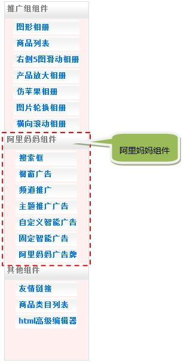 什么是阿里妈妈组件？ 在新淘网，除了推广组类的组件，我们还集成了阿里妈妈中的部分商品推广组件，此类组件是由阿里妈妈官方精心设计发布的成品组件，此类组件所涉及的商品同样均为面向淘客的可推广商品。 如何使用阿里妈妈组件？ ①搜索框 这里的搜索框组件提供了针对淘宝中可推广商品的搜索功能。 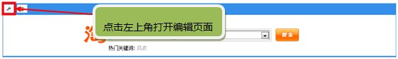 在编辑页面你可以对搜索框的布局、提示搜索内容以及关键词等内容进行修改。 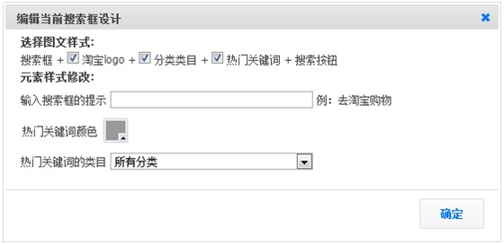 ②橱窗广告 橱窗广告组件是阿里妈妈对部分热门类目的推广商品进行设计封装，从而方便淘宝客直接推广的组件，使用此组件，你只需选择橱窗类别即可。 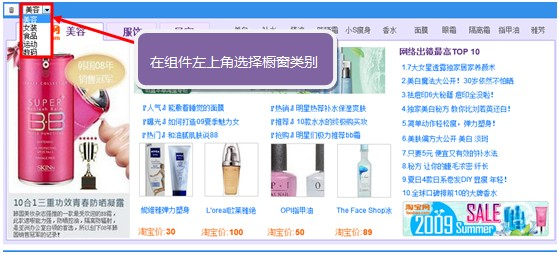 ③频道推广 频道推广组件集成了阿里妈妈的12个频道的推广信息，可以说此组件实现了将阿里妈妈的频道页面嵌入淘客推广站的功能，你只需选择推广频道的类目。 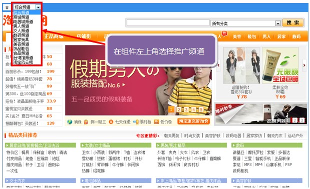 ④主题推广广告 主题推广广告包含了阿里妈妈中所有推广商品的主题广告信息，你可以在此组件中选择多个想要推广的商品主题。 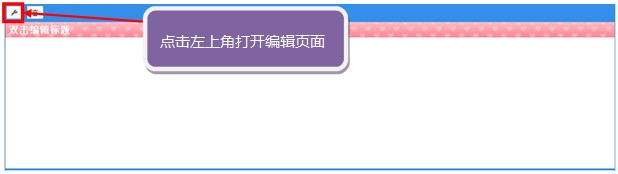 在编辑页面可以选择各种推广主题，选择完成后点击“确认增加已选主题”完成组件设计。 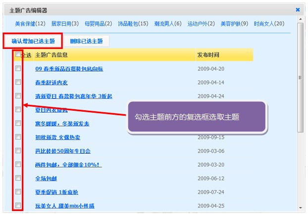 ⑤自定义智能广告 你可以再自定义智能广告组件中选择你想要生成的智能广告类别。 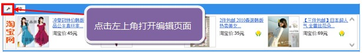 在编辑页面可以进行选择广告类别、定义广告牌排版布局等操作。 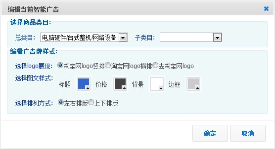 ⑥固定智能广告 在固定智能广告中，你可以选择想要推广的商品类别，并且自动生成的广告牌为阿里妈妈设计好的多种广告版式；另外，你还可以选择生成多种尺寸版式的阿里妈妈设计的主题广告牌 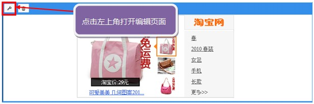 在编辑页面可以选择广告类别，并选择生成的广告牌版式尺寸；或者选择主题广告牌的尺寸版式。 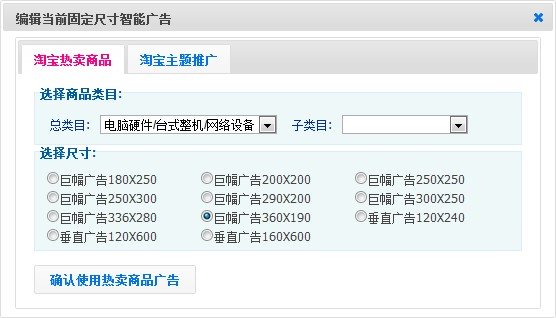 ⑦阿里妈妈广告牌 阿里妈妈广告牌是由阿里妈妈提供的广告牌制作功能，也就是Banner Maker，Banner Maker 创新于 07年年初，独特的思路和产品构思，在互联网传播的介质里，我们开始启航，立足与淘宝网网络购物和阿里妈妈广告产品营销系统，Banner Maker 深受淘宝网商家和广告主，站长们的热捧。 在这里Banner Maker 聚集了 上千名专业设计师，每天都有设计师为你精心为你打造精美的的作品，从单纯做广告牌，到现在我们推出的，图文，类目，收藏，贺卡... 服务于各个产品方。 在整个互联网，太多地方需要设计资源，给自己做个blog，给自己做营销，网上开店，到处需要设计，Banner Maker在这里你可以站在设计师的肩膀上完成自己的作品，在这里给你准备了大量的规模设计资源市场，你可以进行简单修改、DIY自己的设计作品，为您提供了易于使用的编辑工具，通过选择模板，利用大量效果、字体、图案等获得创意，她全新的设计生成概念将助您快速生成完美绝伦的动画的作品。 “ 在 这 里 每 个 人 都 是 设 计 师” 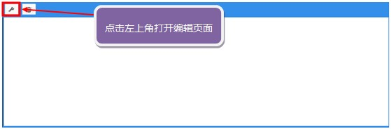 第一步 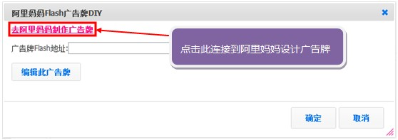 第二步，这里最好先使用淘宝账号登陆阿里妈妈，以便于保存你设计的广告牌数据供下次继续修改。 第三步，编辑好广告牌后，将广告牌输出信息中的Flash地址复制记录下来。 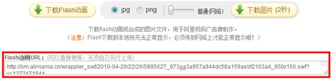 第四步，将刚才复制的Flash地址粘贴到阿里妈妈广告组件中并点击确认完成组件设计。 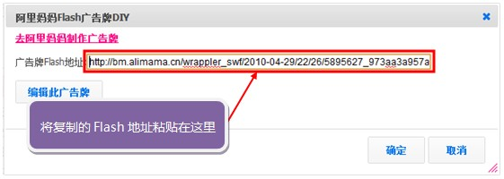 |